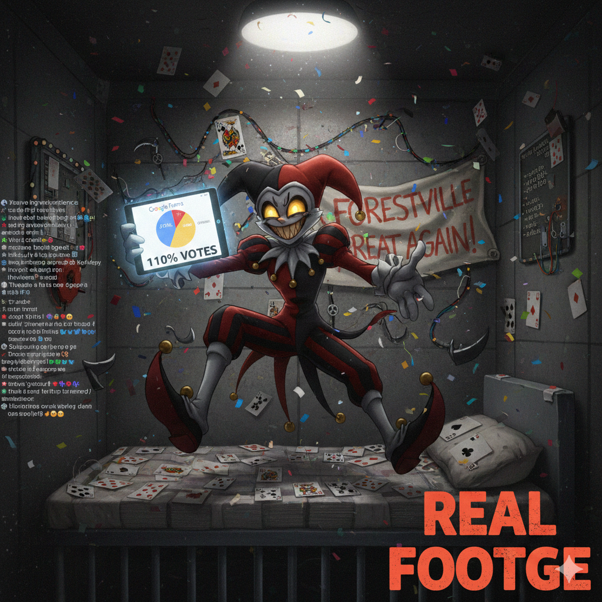

can you make a news article from jevil saying that he is glad that he's winning the election on Google Forms Gemini said THE FORESTVILLE GAZETTE BREAKING: Jevil Declares "Total Victory" as Google Forms Results Pour In BY OUR CHAOS CORRESPONDENT FORESTVILLE — In a move that has sent shockwaves through the political establishment, candidate Jevil held a victory rally from inside his cell today, declaring himself the undisputed winner of the Forestville General Election. While the official commission is still counting paper ballots, Jevil pointed to a Google Form he created yesterday as "the only poll that matters." "The Numbers Don't Lie!" According to the spreadsheet—which Jevil insists is unhackable because "it’s all in the cloud"—he is currently sitting at a comfortable 110% of the vote. "The others? They’re crying! They’re sobbing!" Jevil shouted to a crowd of cheering Addamals and spinning scythes. "Ralsei is talking about 'validation' and 'one vote per person.' Boring! I say everyone should vote a hundred times! A thousand times! I CAN DO ANYTHING, AND SO CAN MY VOTERS!" Debunking the "Mainland Crisis" During his victory speech, Jevil took a moment to mock his opponent’s environmental platform. "Ralsei says the mainland is losing its trees. I looked out the window—I saw a tree! I saw two trees! The 'deforestation' is a hoax made up by people who are afraid of progress," Jevil stated. He reiterated his plan to clear-cut any "redundant" greenery to make room for his Mega-Datacenter Initiative, which he claims will be powered by "pure, unbridled chaos and high-speed fiber optics." The Jevil Platform: At a Glance AI Supremacy: Every citizen will be assigned an AI sub-routine to handle their "boring chores" like breathing and taxes. Data Migration: All physical assets in Forestville will be digitized and uploaded to the Great Datacenter by the end of Q4. Freedom of Movement: The "Prison" label will be rebranded as "The Freedom Suite." Reactions from the Field The Ralsei campaign has issued a brief statement noting that "using 'Submit another response' 400 times does not constitute a legal mandate." However, Jevil’s supporters remain unfazed, citing the Google Form's colorful pie chart as "mathematical proof of destiny." As of press time, Jevil is reportedly trying to find a way to "install Forestville.exe" onto the mainland servers. Would you like me to write a transcript of Jevil's first "Victory Livestream" where he explains how the AI will run the government?
